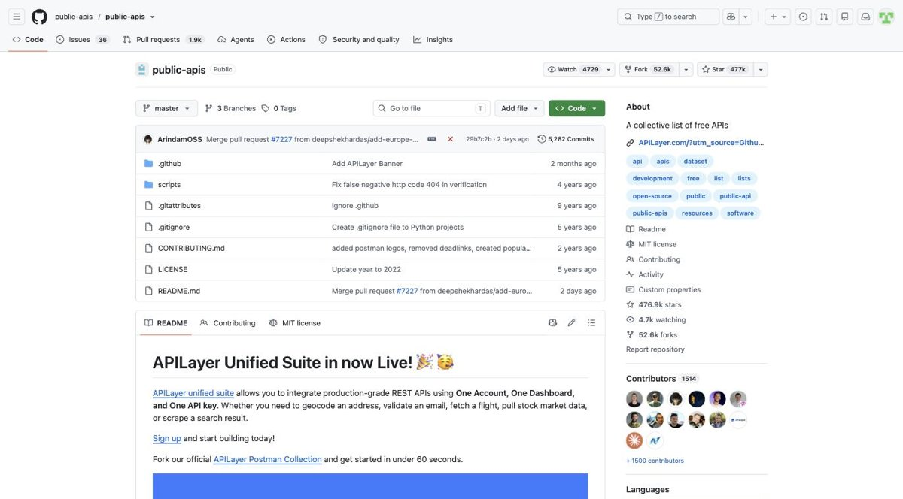
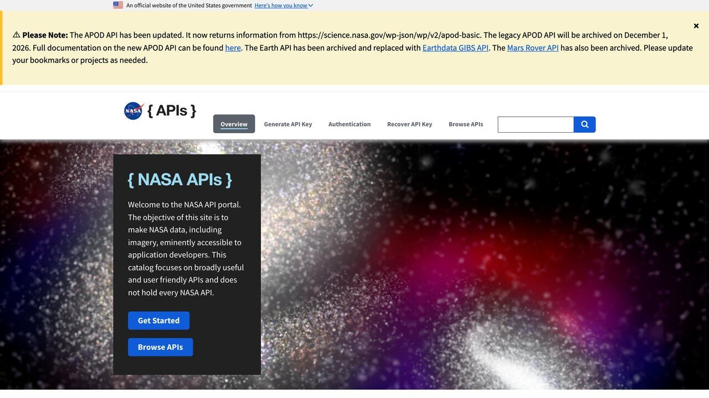

APIs gratuitas para darle superpoderes a tu agente de IA
No es la lista entera de APIs del mundo, es una selección filtrada por una sola pregunta: ¿esto le sirve de verdad a un agente que necesita hacer algo, no solo hablar de ello? Filtra por categoría y encuentra la tuya.
En GitHub existe un repositorio llamado public-apis, con casi 500.000 estrellas, que cataloga miles de APIs gratuitas por categoría. Es un recurso genuinamente útil, pero también es enorme y genérico: mezcla APIs de anime, de Pokémon y de finanzas corporativas en la misma lista plana, sin distinguir cuáles tienen sentido para alguien que está construyendo un agente de IA con acceso a herramientas reales.
Esta guía hace ese filtrado por ti: una selección más pequeña, organizada por lo que resuelve cada categoría, con un caso de uso concreto en vez de solo un nombre y un enlace. Todas exigen registro gratuito como mucho — ninguna pide pago para el nivel de uso que necesitas mientras aprendes o pruebas una idea.

Filtra por lo que necesitas
Pulsa una categoría para ver solo esas APIs. Cada tarjeta indica si necesita clave, el límite gratuito aproximado y para qué tipo de agente tiene sentido.
Precios de criptomonedas en vivo, capitalización de mercado, histórico. En nuestra comprobación del 17-oct-2026 respondió sin clave, pero su documentación ofrece una clave «Demo» gratuita con endpoints y límites reducidos: usa esa para algo estable.
Agente de: alertas de precio, resúmenes de mercado.
Tipos de cambio de divisas, datos del Banco Central Europeo, sin límite de peticiones publicado.
Agente de: conversión de divisas, contabilidad multimoneda.
Clima actual e histórico por coordenadas, sin registro. Gratis solo para uso no comercial (según sus términos, menos de 10.000 llamadas al día, 5.000 por hora y 600 por minuto). La usamos en nuestra demo en vivo de agente con datos reales.
Agente de: logística, agricultura, planificación de eventos.
Indicadores económicos y sociales oficiales de más de 200 países, décadas de histórico.
Agente de: verificación de datos, periodismo de datos, investigación.
Titulares recientes por palabra clave o tema, 100 peticiones/día gratis con registro simple. El plan gratuito es solo no comercial, devuelve hasta 10 artículos por petición y con 12 horas de retraso.
Agente de: resúmenes de prensa, monitorización de menciones.
Historias, comentarios y rankings de Hacker News en tiempo real, mantenida oficialmente.
Agente de: vigilancia de tendencias tecnológicas.
Convierte una dirección en coordenadas y viceversa. Uso justo limitado a 1 petición/segundo.
Agente de: logística, atención al cliente con dirección de envío.
Datos de cualquier país: capital, moneda, idiomas, zona horaria, banderas. Desde que retiró sus versiones antiguas (v1 a v4), exige la versión v5 con clave de API; los ejemplos antiguos con v3.1 ya no funcionan.
Agente de: validación de formularios, contexto internacional.
Repositorios, issues, pull requests, commits. 5.000 peticiones/hora gratis autenticado.
Agente de: triaje de issues, resúmenes de actividad de un repo.
API falsa con datos de ejemplo, pensada para probar tu código de integración sin tocar nada real.
Agente de: pruebas y desarrollo antes de conectar la API real.
Qué significa "gratis" exactamente en una API
"Gratis" en el mundo de las APIs casi nunca significa "sin límite". Lo habitual es un modelo de cuota: un número fijo de peticiones por minuto, por hora o por mes, después del cual la API responde con un código de error (normalmente 429 Too Many Requests) en vez de con datos, hasta que la cuota se renueva. Entender ese número antes de construir nada es la diferencia entre un agente que funciona de forma fiable y uno que falla de forma intermitente y difícil de depurar.
| Tipo de límite | Ejemplo real | Qué significa para tu agente |
|---|---|---|
| Por segundo | Nominatim: 1 petición/segundo | Vale para uso conversacional puntual, no para procesar una lista grande de golpe. |
| Por hora | GitHub API: 5.000/hora autenticado | Cómodo incluso para uso intensivo de un equipo pequeño. |
| Por día | GNews: 100/día en capa gratuita | Suficiente para pruebas y proyectos personales, ajustado para producción con tráfico real. |
| Uso justo sin cifra fija | Frankfurter, World Bank | Cómodo para casi cualquier uso, pero sin garantía contractual de disponibilidad ni cifra publicada. |
Un error habitual es probar una API con dos o tres llamadas manuales, ver que funciona, y asumir que aguantará el volumen real de producción sin comprobarlo. Antes de lanzar algo, calcula el volumen esperado (cuántos usuarios, cuántas consultas por usuario al día) y compáralo con el límite publicado — si tu estimación se acerca al límite, es mejor saberlo antes de lanzar que descubrirlo cuando empiecen a fallar peticiones a media tarde.
Cómo evaluar una API antes de construir sobre ella
Antes de escribir una sola línea de código, cuatro preguntas rápidas ahorran horas de trabajo tirado: ¿tiene documentación clara con ejemplos reales, no solo una lista de campos? ¿el límite gratuito publicado coincide con lo que realmente necesitas, o vas a chocar con él en la primera semana de uso real? ¿hay un panel de estado público donde ver si está caída ahora mismo? ¿el último cambio en su documentación es de hace meses o de hace años?
Ninguna de las APIs de la sección anterior es perfecta para todos los casos: Nominatim, por ejemplo, tiene un límite estricto de una petición por segundo que la hace inadecuada si tu agente necesita geocodificar miles de direcciones de golpe, aunque sea perfecta para un uso puntual dentro de una conversación. Conocer el límite antes de construir evita el peor escenario: un agente que funciona perfecto en tus pruebas y se rompe en cuanto un usuario real le da más carga de la que probaste.
La calidad de la documentación es, en la práctica, tan importante como la calidad del dato en sí. Una API con ejemplos de petición y respuesta reales, códigos de error explicados uno por uno y un playground donde probar sin escribir código todavía, ahorra horas frente a una que solo enumera nombres de campos sin contexto. Si la documentación te deja dudas razonables sobre qué pasa en un caso límite (¿qué devuelve si la ciudad no existe? ¿y si mando un parámetro vacío?), pruébalo tú mismo con una llamada real antes de asumir un comportamiento y construir tu código sobre esa suposición — es más barato descubrir la sorpresa en una prueba de treinta segundos que en producción con un usuario real esperando respuesta.

Cuándo NO conviene usar una API pública gratuita
No todo lo que se puede resolver con una API gratuita debería resolverse así. Hay tres señales claras de que ha llegado el momento de plantearse un plan de pago o una fuente distinta: el límite gratuito se queda corto de forma estructural y previsible (no un pico puntual), el servicio no publica ningún compromiso de disponibilidad (SLA) y tu negocio depende de que esté siempre arriba, o la documentación lleva mucho tiempo sin actualizarse mientras el resto del ecosistema (versiones de librerías, formatos de datos) sigue avanzando a su alrededor.
Ninguna de estas señales significa que la API sea mala — Open-Meteo, por ejemplo, es excelente para proyectos personales o de aprendizaje (su capa gratuita es solo no comercial), pero una aerolínea que necesita garantías contractuales de disponibilidad para su sistema de vuelos no debería construir sobre una capa gratuita sin compromiso de servicio, por buena que sea la API el 99% del tiempo. La pregunta correcta no es "¿es gratis?" sino "¿qué pasa el día que falla, y puedo permitirme ese día?".
Hay un caso peor que una API con límites: que no exista ninguna API. Entonces el dato solo está publicado dentro de una página web, y sacarlo de ahí tiene sus propias reglas —técnicas y legales— que conviene conocer antes de empezar: cómo montar un agente que extrae datos de páginas web.
Combinando varias APIs en un mismo agente
El valor real casi nunca está en una sola API aislada, sino en combinar dos o tres dentro del mismo agente. Un ejemplo real: un agente de viajes que primero usa REST Countries para confirmar en qué moneda opera el país de destino, luego Frankfurter para convertir un presupuesto a esa moneda, y por último Open-Meteo para avisar si el clima previsto afecta a los planes — tres llamadas encadenadas, tres APIs distintas, cada una resolviendo una pieza pequeña y concreta del problema completo.
Siguiendo el patrón de código de nuestra guía sobre cómo conectar un agente a datos reales, cada una de estas fuentes se define como una herramienta independiente en la misma lista que le pasas al modelo. El modelo decide por sí solo cuáles de las tres necesita para una petición concreta —a veces solo una, a veces las tres encadenadas— sin que tengas que programar esa lógica de decisión a mano.
Otro ejemplo, esta vez de desarrollo de software: un agente interno que ayuda a un equipo pequeño a triar issues nuevos en GitHub podría combinar la GitHub REST API (para leer el issue recién creado y su historial), Hacker News API (para comprobar si el tema ya se ha discutido públicamente y aportar contexto) y JSONPlaceholder durante la fase de desarrollo, para probar todo el flujo de principio a fin con datos falsos antes de conectarlo a un repositorio real donde un error sí tendría consecuencias.
Ese último detalle —probar con una API falsa antes de tocar la real— es una práctica que se salta con demasiada frecuencia por prisa, y es exactamente la que evita que un fallo de tu código (no de la API) borre o modifique algo real mientras todavía estás depurando la integración.
Un tercer ejemplo, esta vez en el sector agrícola: una pequeña explotación podría montar un agente que consulta Open-Meteo cada mañana temprano, compara la previsión de lluvia y viento con umbrales que el propio agricultor definió como "condiciones de riesgo para la cosecha", y solo cuando se supera ese umbral genera una alerta redactada en lenguaje natural, en vez de un simple número que hay que interpretar. El coste de infraestructura de un agente así es prácticamente cero —una API gratuita, una llamada al modelo una vez al día— frente al valor de anticipar un problema con horas de margen.
Cómo guardar una clave sin exponerla
De las diez APIs de la sección anterior, varias exigen una clave de registro (GNews, GitHub y REST Countries, y CoinGecko si usas su plan Demo). La regla no negociable es la misma para todas: la clave vive en una variable de entorno de tu servidor, nunca escrita directamente dentro del código fuente ni, mucho menos, dentro de JavaScript que se ejecuta en el navegador del usuario final, donde cualquiera puede leerla abriendo las herramientas de desarrollador.
# archivo .env, nunca subido a git
GNEWS_API_KEY=tu_clave_aqui
# en tu código Python
import os, requests
clave = os.environ["GNEWS_API_KEY"]
requests.get("https://gnews.io/api/v4/search", params={"apikey": clave, "q": "IA"})
Añade siempre el archivo .env a tu .gitignore antes del primer commit, no después: una clave que llega a subirse a un repositorio público, aunque la borres en el siguiente commit, queda visible para siempre en el historial de Git a menos que reescribas ese historial por completo. Nuestra guía sobre proteger tus datos al conectar la IA a tus herramientas cubre este y otros riesgos de seguridad con más detalle.
Errores comunes al elegir APIs para un agente
Elegir la API más famosa en vez de la más adecuada
Una API con mucha popularidad no es automáticamente la mejor para tu caso concreto — a veces una alternativa menos conocida tiene un límite gratuito mejor o una respuesta más simple de procesar para lo que necesitas exactamente.
No leer la política de uso comercial antes de lanzar algo
Varias APIs de esta lista distinguen explícitamente uso personal de uso comercial en sus términos. Confirmarlo antes de lanzar un producto evita un corte de acceso sorpresa el día que más tráfico tienes.
Depender de una sola API sin plan de contingencia
Si tu agente depende por completo de una única fuente externa y esa fuente cae, tu agente cae con ella. Para funciones críticas, vale la pena identificar una alternativa de respaldo antes de necesitarla de verdad.
No cachear respuestas que casi no cambian
Datos como la lista de países o el tipo de cambio de una hora concreta no necesitan una llamada nueva cada vez que el agente los pide. Guardar la respuesta un tiempo razonable (minutos u horas, según el dato) reduce el consumo de tu cuota gratuita y hace que tu agente responda más rápido.
Ignorar la codificación de caracteres o el formato de fecha de una API extranjera
Una API mantenida por un equipo en otro país puede devolver fechas en un formato distinto al que asumes por defecto, o texto en una codificación que rompe acentos si no la declaras explícitamente. Comprobarlo con un caso de prueba real que incluya caracteres especiales evita errores silenciosos que solo se notan cuando ya hay datos corruptos guardados.